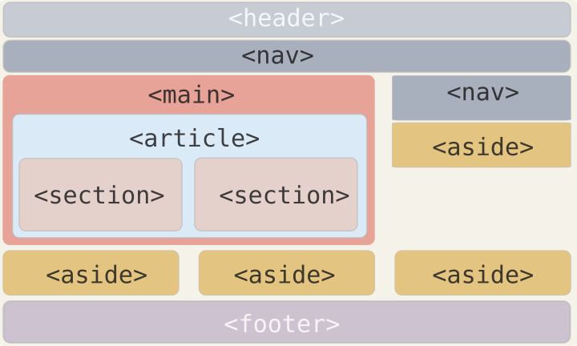

웹 문서에서 스타일이란 HTML 문서에서 자주 사용하는 글꼴이나 색상, 정렬, 각 요소의 배치 방법과 같이 문서의 겉모습을 결정짓는 것을 가리킵니다. HTML로는 웹 사이트의 내용을 나열하고 CSS로는 웹 문서의 디자인을 구성합니다. 기존 HTML 문서는 PC의 웹 브라우저 화면이 기본으로 되어 있어서 인쇄하려면 용지에 맞게 따로 작성해야 했습니다. 또한 모바일용 홈페이지가 필요할 경우에도 스마트폰 브라우저에 적합하게 문서를 따로 만들어야 했죠. 하지만 CSS를 이용하면 HTML로 작성한 내용은 그대로 두고 대상 기기에 맞게 CSS만 바꿔 주면 여러 기기에서 볼 수 있습니다.
HTML
- HTML이란?
- HTML(Hypertext Markup Language,하이퍼텍스트 마크업 언어)는 프로그래밍 언어 X
- 우리가 보는 웹페이지가 어떻게 구조화되어 있는지 브라우저로 하여금 알 수 있도록 하는 마크업 언어
- 개발자로 하여금 복잡하게도 간단하게도 프로그래밍 할 수 있게 함
- elements로 구성됨
- 적절한 방법으로 나타내고 실행하기 위해 각 컨텐츠의 여러 부분들을 감싸고 마크업 함
시맨틱태그란?
- 시맨틱(semantic)이란 '의미론적인', '의미가 통하는' 이란 뜻
- HTML에서 태그 이름만 봐도 어떤 역할을 하는지 쉽게 알 수 있는 문서 구조 태그
시맨틱 태그의 용도
- header
- 헤더 영역을 의미
- 주로 맨 위쪽이나 왼쪽에 존재
- 주로 검색창이나 사이트 메뉴를 삽입함
- main
- 웹 문서에서 핵심이 되는 내용 삽입
- 웹 문서마다 다르게 보여주는 내용으로 구성
- 페이지마다 똑같이 들어간 정보는 삽입 X
- 웹 문서에서 한 번만 사용
- footer
- nav
- section
- 콘텐츠 영역
- 몇 개의 콘텐츠를 묶는 용도로 사용
- article
- 웹에서 실제로 보여주고 싶은 내용 삽입
- 독립된 콘텐츠로 사용
- 문서 안에 article 태그를 여러 개 사용할 수 있고, 이 안에 section 태그 삽입 가능
- aside
- 본문 내용 외의 왼쪽이나 오른쪽, 혹은 아래쪽에 사이드 바 생성
- 필수 요소가 아니므로 필요한 경우에만 사용
시맨틱태그란?
시맨틱태그란?
스타일 시트
| 브라우저 기본 스타일 |
웹 브라우저에 웹 문서를 표시할 때 브라우저에서 기본으로 사용하는 스타일 |
|---|---|
| 인라인 스타일 | style 속성을 사용해 필요한 요소에 스타일을 직접 지정 |
| 내부 스타일 시트 | 문서 앞부분에 문서에서 사용하는 스타일을 모아서 함께 정의하고 관리 |
| 외부 스타일 시트 | 문서에서 사용하는 스타일을 모아서 따로 파일로 저장한 후 연결해서 사용 |
CSS 기본 선택자
| 전체 선택자 | 문서의 모든 요소에 스타일 적용 | * { margin : 0; } |
|---|---|---|
| 타입 선택자 | 특정 태그를 사용한 모든 요소에서 스타일 적용 | p { font-style : italic; } |
| 클래스 선택자 | 특정 부분만 선택해서 문서 안에 여러 번 적용 | .bg { background-color : #ddd; } |
| id 선택자 | 특정 부분만 선택해서 문서 안에서 한 번만 적용 | #container { width : 500px; } |
| 그룹 선택자 | 여러 요소에 같은 스타일을 적용할 때 사용 | h1, h2 { text-align : center; } |
시맨틱태그란?
스타일 우선 순위
: 사용자 스타일 → 제작자 스타일 → 브라우저 기본 스타일
: !important → 인라인 스타일 → id 스타일 → 클래스 스타일 → 타입 스타일
: 나중에 작성한 스타일이 먼저 작성한 스타일을 덮어 씀